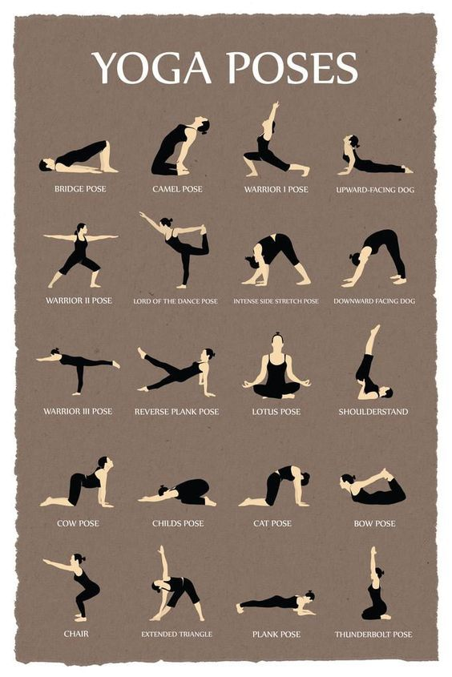

Основная информация
ещё
Регистрация
Формирование здорового образа жизни: советы, тренировки и рецепты
Это начальный курс для успешных начинаний в поддержании своего здорового образа жизни!
Упражнения для улучшения здорового образа жизни

Базовые рецепты здоровой пищи
Морковные конфеты
Стейк из тыквы со сметанным соусом
Сырный омлет с брюссельской капустой
Часто задаваемые вопросы
вопросы